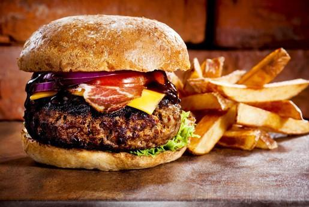

Maníacos por la cocina
La locura con sabor
Favoritos:
Historial:
Foodporn
Subido el 18/12/2018

Con saber solamente un poco de inglés entenderemos qué es la foodporn: comida pornográfica. Una traducción literal, efectivamente, que ejemplifica de un plumazo este concepto. Una forma de englobar todos esos alimentos y platos que resultan irresistibles. Aquellas preparaciones que prenden la llama del deseo, en forma de irrefrenable apetito, de todo aquel que los contempla. Todo lo que nos hace salivar.
Podemos estar hablando de un buen entrecot siendo cocinado en una parrilla, una paella valenciana haciéndose a leña, una buena bandeja de sushi, una hamburguesa chorreante de salsa y jugo, una tortilla con patata (y tal vez un poco de cebolla) sin terminar de cuajar, unos exquisitos chipirones fritos, una ensalada con pimientos asados… seguro que todo el mundo tiene un buen número de platos que, puestos ante sí físicamente o a través de una fotografía, provocan los rugidos de su estómago.
Deja tus comentarios
Hamburguesas
Subido el /12/2018
Los orígenes de la hamburguesa son inciertos, pero posiblemente fue elaborada por primera vez en el período que va desde finales del siglo XIX hasta comienzos del XX.[1][2] La hamburguesa moderna nace de las necesidades culinarias de una sociedad que, por su reciente industrialización, lleva un ritmo de vida más acelerado.
El origen de este alimento procesado es poco claro debido principalmente a que son muchas las personas, todas ellas de Hamburgo, que se disputan el honor de haber sido las primeras en poner dos rebanadas de pan a un filete de carne picada de vacuno (hamburger steak). Poco después de componer la hamburguesa con sus dos panes, comenzó a aderezarse con todos sus acompañamientos característicos: cebollas, hojas de lechuga, rebanadas de encurtidos, bebidas, etc. Cabe destacar que los ingredientes básicos empleados en su elaboración, es decir, el pan y la carne de vacuno, se consumían por separado desde hace mucho tiempo.
La historia de este alimento es notable por diversos motivos. Durante el transcurso del siglo XX, dicha historia va acompañada de diversas polémicas, como por ejemplo la controversia nutricional de finales de los años 90. La hamburguesa se identificó con un país, Estados Unidos, y con un estilo de alimentación emergente: el fast food.[3] La hamburguesa, junto con el fried chicken y la tarta de manzana, forma parte del conjunto de alimentos iconos de la gastronomía estadounidense.[4][5]
Su expansión a través de todos los continentes pone de manifiesto el proceso de globalización de la alimentación humana;[6] cabe pensar que otros muchos alimentos han seguido sus pasos globalizadores: el döner turco, la pizza italiana o el sushi japonés entre otros. La hamburguesa se ha propagado como alimento por todo el mundo, quizás por ser sencilla de comprender en las diferentes culturas culinarias del mundo.[7] Esta globalidad culinaria se ha producido, en parte, por un nuevo concepto de vender alimentos procesados que nace en los años 20 con la cadena de restaurantes White Castle (cuyo ideólogo es Edgar Waldo «Billy» Ingram) y que se perfecciona en la década de 1940 con McDonald's (dirigida por el ejecutivo Ray Kroc).[8][9]Esta expansión mundial ha proporcionado comparativas económicas como el Índice Big Mac,[10] que permite comparar el poder adquisitivo de distintos países donde se vende la hamburguesa Big Mac de la cadena de restaurantes de comida rápida McDonald's.
La hamburguesa es un alimento en el que se refleja parte de la historia del siglo XX y al que, por diversos motivos, se le ha atribuido un cierto simbolismo.[11] La hamburguesa ha cumplido en la actualidad más de un siglo de existencia en la alimentación humana y puede decirse que su relativamente corta historia ha tenido más literatura que otros alimentos similares y contemporáneos como pueden ser el hot dog estadounidense, el currywurst alemán o la pizza italiana.